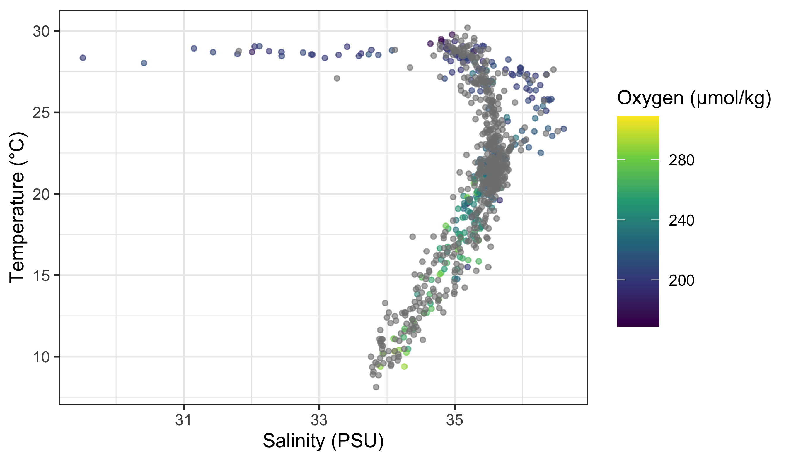
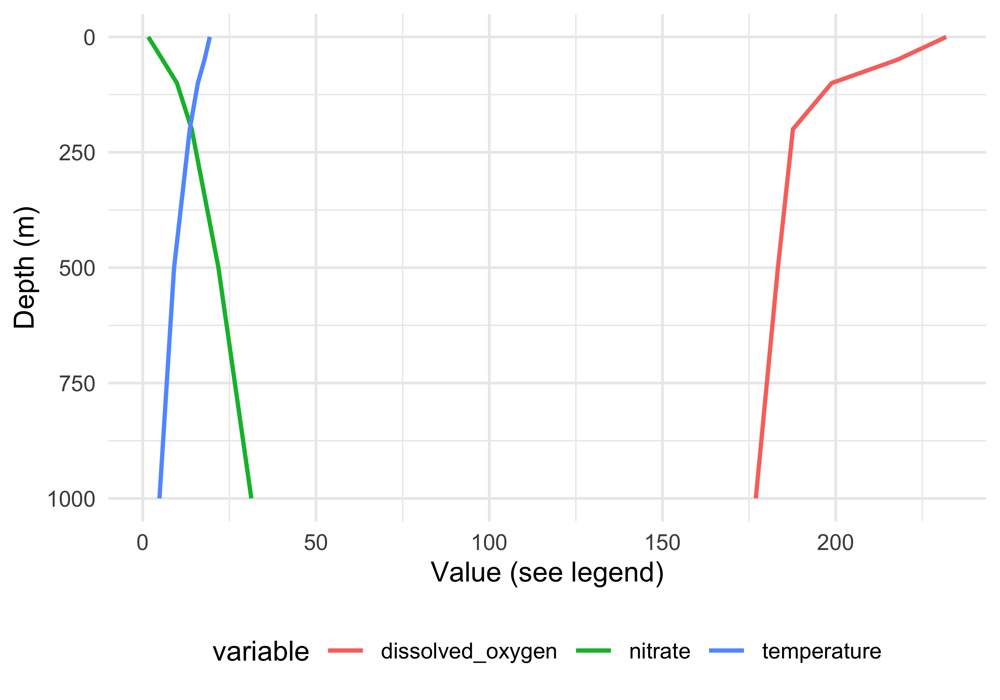

R> Rows: 200,382
R> Columns: 8
R> $ lat <dbl> -44.5, -44.5, -44.5, -44.5, -44.5, -44.5, -44.5, -44.5, -44.5…
R> $ lon <dbl> 6.5, 7.5, 9.5, 12.5, 14.5, 15.5, 19.5, 20.5, 22.5, 24.5, 26.5…
R> $ depth_m <dbl> 0, 0, 0, 0, 0, 0, 0, 0, 0, 0, 0, 0, 0, 0, 0, 0, 0, 0, 0, 0, 0…
R> $ value <dbl> NA, 295.308, 295.840, NA, 280.251, NA, 270.377, 270.764, 289.…
R> $ month <dbl> 0, 0, 0, 0, 0, 0, 0, 0, 0, 0, 0, 0, 0, 0, 0, 0, 0, 0, 0, 0, 0…
R> $ variable <chr> "dissolved_oxygen", "dissolved_oxygen", "dissolved_oxygen", "…
R> $ unit <chr> "umol/kg", "umol/kg", "umol/kg", "umol/kg", "umol/kg", "umol/…
R> $ source <chr> "WOA18 decav 1.00° CSV", "WOA18 decav 1.00° CSV", "WOA18 deca…9. Graphics with ggplot2
Smit, A. J. ![]()

“The simple graph has brought more information to the data analyst’s mind than any other device.”
— John Tukey
“If I cannot picture it, I cannot understand it.”
— Albert Einstein
1 Introduction
Though it may have started as statistical software, R has moved far beyond its origins. The language is now capable of a wide range of applications, some of which you have already seen, and some others you will see over the rest of this course. For the second half of Day 2 we are going to jump straight into data visualisation.
R has a diverse library of graphics packages and functions, which allows for creation of various types of plots and graphs for visualising data in meaningful ways. Some of the interesting features of R graphics include:
Customisability Plots can be highly customised, from axis labels and titles to colours, markers, and themes.
Wide range of plot types R offers a variety of plot types, including scatter plots, line plots, bar plots, histograms, density plots, box plots, and more.
Integration with data analysis R graphics integrates well with the data analysis functions in R, making it easy to plot the results of statistical models and analyses.
Interactivity R graphics can be made interactive, allowing users to zoom, pan, and hover over data points to reveal more information.
Publication-quality R graphics can be generated in a high-resolution format suitable for printing or publishing, making it a popular choice for academic and scientific publications.
R comes with its own built-in graphics capabilities, and it is capable of creating an astounding array of figure types. In this course, however, I will use the increasingly popular ggplot2 package developed by Hadley Wickham.
2 Example Figures
Just to whet the appetite, below is provided a small selection of the figures that R and ggplot2 are capable of producing. These are things that AJ and/or myself have produced for publication or in some cases just for personal interest. Remember, just because we are learning this for work, does not mean we cannot use it for fun, too. The idea of using R for fun may seem bizarre, but perhaps by the end of Day 5 we will have been able to convince you otherwise!


3 ggplot2, ggplot, and ggplot()
R comes with basic graphing capability, known colloquially (by nerds like me) as base R graphics. The syntax used for this method of creating graphics is often difficult to interpret as there are few human words in the code. In addition to this issue, base R graphics also does not allow the user enough control over the look of the final product to satisfy the demands of many publishers. This means that the figures tend not to look professional enough (but still much better than Excel). To solve both of these problems, and others, the ggplot2 package was born. ggplot2 is a widely used, popular graphics package in R, based on Leland Wilkinson’s The Grammar of Graphics.
To avoid confusion, I will distinguish between three related ideas: ggplot2 (the package), ggplot (the system for building graphics), and ggplot() (the function that starts a plot).
Before we dive into syntax, here are three mental models that will keep you oriented as we move through examples:
- ggplot builds plots by accumulation, not transformation. You start with a base layer and add components.
- Aesthetics are either data-driven or constant — never both. If it comes from data, it belongs inside
aes(). If it is a fixed value, it belongs outside. - Grouping is not decoration; it is data identity. It tells ggplot which observations belong together.
Although there are many advantages to using ggplot2 over base R graphics, people do at times raise a few issues with the package. These are criticisms I see mentioned on the internet from time to time, but my opinion differs, and I add my own views in square brackets after each point:
Learning curve The package can have a steep learning curve for beginners, as it employs a different syntax and logic compared to base R graphics. Users may need to invest time and effort to become proficient in using ggplot2 effectively. [I think it is mainly long-time R users that hold this view. My view is that for first-time users, it may be easier to learn compared to base R graphics.]
Customisation limitations Although ggplot2 provides extensive customisation options, there are certain cases where users might find it difficult to achieve the desired level of customisation for their plots. In some instances, base R graphics or other specialised packages might offer better control over specific plot elements. [Maybe, in specialised instances only. I will think of a few such instances and put them here. But I think recent development of many add-on packages have largely eliminated many of the shortfalls people experienced early on. See for example the various extensions available.]
Performance Drawing figures made with ggplot2 (not the coding but the computational speed) can be slower than base R graphics, especially when dealing with large datasets, producing a high number of plots. This may not be ideal for users who require fast, real-time plotting or are working with limited computational resources.
Overhead The package relies on additional packages and dependencies, which can add to the overhead of managing the R environment. Users who prefer a more lightweight approach may find base R graphics more appealing.
Less suitable for 3D plotting It is true that ggplot2 is primarily designed for creating 2D graphics. It is possible to create 3D plots with some workarounds, but ggplot2 may not be the best choice for users who frequently work with 3D data visualisation. Other packages, such as lattice, scatterplot3d, or rayshader, may be better suited for these purposes.
Layered approach complexity The layered approach of ggplot2, while powerful and flexible, can become complex and verbose when building more intricate plots. This might lead to less readable and maintainable code in some cases. [I disagree. I personally find the code more readable, and very intuitive to understand. It is true that it can be quite verbose, that simple graphs can be quickly constructed in base R graphics with fewer lines of code.]
Nevertheless, ggplot2 remains a highly popular, versatile package for data visualisation in R. Its strengths in creating beautiful (but not always by default!), customisable, and complex graphics often outweigh its limitations. It is also less cluttered with non-nonsensical jargon terms, the vocabulary is easier to understand by mere humans — most of the package’s functions are English verbs. So, let us look at the basic concepts in some detail — I will do so mostly by working through numerous examples.
3.1 geom_*(), the Pipe (%>% or |>), and the + Sign
Transition: we now move from ggplot as a system to ggplot() as syntax. Keep the first mental model in mind, that is, ggplot builds plots by accumulation.
As part of the tidyverse (as we saw briefly on Day 1, and will go into in depth on Day 4), the ggplot2 package endeavours to use a clean, easy for humans to understand syntax that relies heavily on functions that do what they say. For example, the function geom_point() makes points on a figure. Need a line plot? geom_line() is the way to go! Need both at the same time? No problem. In ggplot we may seamlessly merge a nearly limitless number of objects together to create startlingly sophisticated figures.
Before we go over the code below, it is very important to note the use of the + signs. This is different from the pipe symbol (|> or %>%) used elsewhere in the tidyverse. The + sign indicates that one set of geometric features is added to another, each building on top of what came before. In other words, we add one geometry on top of the next, and in such a way we can arrive at complex graphical representations of data. Effectively, each line of code represents one new geometric feature with its own aesthetic appearance of the figure. It is designed this way so as to make it easier for the human eye to read through the code.
Note
+ Signs in ggplot() Code
One may see below that the code naturally indents itself if the previous line ended with a + sign. This is because R knows that the top line is the parent line and the indented lines are its children. This is a concept that will come up again when we learn about tidying data. What we need to know now is that a block of code that has + signs, like the one below, must be run together. As long as lines of code end in +, R will assume that you want to keep adding lines of code (more geometric features). If we are not mindful of what we are doing we may tell R to do something it cannot and we will see in the console that R keeps expecting more + signs. If this happens, click inside the console window and press the Esc button to cancel the chain of code you are trying to enter.
NoteDebugging Ggplot Messages
Most ggplot2 errors and warnings point to a specific layer or aesthetic. Read them as clues about which layer failed and why. If the message mentions an unknown aesthetic or object, check spelling and whether the variable exists in your data. If it mentions a problem with a scale, check whether you accidentally mapped a constant inside aes() or mixed mapped and constant aesthetics across layers.
3.2 aes()
Transition: we now move from accumulation to aesthetic mapping. Keep the second mental model in view: aesthetics are data-driven or constant.
Another recurring function within the parent ggplot() function or the associated geom_*() is aes(). The aes() function in ggplot2 is used to specify the mapping between variables in a dataframe and visual properties of a plot. aes() stands for ‘aesthetic,’ which refers to the visual elements of a plot, such as colour, size, shape, etc. In ggplot, the aesthetics of a plot are defined inside the aes() function, which is passed as an argument to the base ggplot() function or its associated geometry.
It helps to separate positional aesthetics from non-positional aesthetics. Positional aesthetics (x, y) place data in the coordinate system and always create scales. Non-positional aesthetics (colour, size, shape, alpha, group) change how the geometry is drawn, and they may or may not create a scale depending on whether you map them to data.
For example, if you have a dataframe with two variables x and y, you can create a scatterplot of x against y by calling ggplot(data, aes(x, y)) + geom_point(). The aes(x, y) function maps the variables (columns) in the dataframe to the x and y positions of the points in the scatterplot. Similarly, we can map variables in the dataframe to non-positional aesthetics, such as colour (e.g., a colour might be more intense as the magnitude of the values in a column increase), size (larger symbols for bigger values), transparency, or grouping.
4 The World Ocean Atlas (WOA18) Core Dataset
In this course we will increasingly use real ocean data. To keep things simple (and fast), we will use a small, tidy extract of World Ocean Atlas 2018 (WOA18) climatologies.
NoteAbout the dataset used in this chapter (World Ocean Atlas 2018)
In this chapter we use a small, tidy extract of World Ocean Atlas 2018 (WOA18) climatologies for the broader Southern Africa region.
Why WOA matters in ocean science:
- Temperature and salinity are the fundamental state variables of seawater, and together shape density and stratification.
- Dissolved oxygen is a key indicator of ventilation, productivity, and habitat suitability.
- Nutrients (nitrate, phosphate, silicate) constrain primary production and structure ecosystems.
These variables are not “just numbers”: they encode the physical and biogeochemical structure of the ocean.
TipData dictionary
See: data/SAMOS/processed/woa18_sa_core_1deg_monthly_DICTIONARY.md
4.1 First plot: a classic Temperature–Salinity (T–S) view
In oceanography, temperature and salinity are often plotted against each other to reveal water-mass structure. Here we do a simple version of that idea using surface climatology (0 m) for February.
woa %>%
filter(month == 2, depth_m == 0, variable %in% c("temperature", "salinity")) %>%
select(lon, lat, variable, value) %>%
pivot_wider(names_from = variable, values_from = value) %>%
ggplot(aes(x = salinity, y = temperature)) +
geom_point(alpha = 0.35, size = 0.8) +
labs(x = "Salinity (PSU)", y = "Temperature (°C)")
4.2 How to Read This Code
Read the plot like a sentence with grammar: subject → verb → modifiers. The subject is the data (here: a filtered slice of woa), the verb is the geometric action (geom_point()), and the modifiers are the aesthetic mappings (aes(...)) that tell ggplot how to draw. The ggplot(...) line sets the stage (data + core mappings), and each geom_*() line adds a new clause. The + sign means “and then add another clause.”
So what is that code doing? We may see from the figure that it is creating a dot for every grid cell, placing salinity on the x‑axis and temperature on the y‑axis (a very common oceanography view).
As a workflow, it is perfectly normal to build plots incrementally: start with a minimal plot, confirm the axes are correct, then add layers one at a time. Partial plots are not failures; they are thinking tools.
The first line of code is telling R that we want to create a ggplot figure. We know this because we are using the ggplot() function. Inside of that function we are telling R which dataframe (or tibble) we want to create a figure from. Lastly, with the aes() function we tell R what the necessary parts of the figure will be. This is also known as ‘mapping’ (variables map to the visual appearance and arrangement of figure elements).
The second line of code then takes all of that information and makes points (dots) out of it, added as a layer on the set of axes created by the aes() argument provided within ggplot(...) — in other words, we add a ‘geometry’ layer, and hence the name of the kind of ‘shape’ we want to plot the data as is prefixed by geom_.
In many cases (especially time series) you will add a geom_line() layer. With the WOA climatology we typically do not connect points with lines because they are not ordered in time within each location.
However, we can add an extra aesthetic mapping to include a third variable. Below we colour points by dissolved oxygen (surface, February). This is an example of mapping a continuous variable to a continuous colour scale.
woa %>%
filter(month == 2, depth_m == 0, variable %in% c("temperature", "salinity", "dissolved_oxygen")) %>%
select(lon, lat, variable, value) %>%
pivot_wider(names_from = variable, values_from = value) %>%
ggplot(aes(x = salinity, y = temperature)) +
geom_point(aes(colour = dissolved_oxygen), alpha = 0.6, size = 0.8) +
scale_colour_viridis_c(name = "Oxygen (µmol/kg)") +
labs(x = "Salinity (PSU)", y = "Temperature (°C)")

Do any patterns appear to emerge? Typically oxygen is higher in cooler surface waters (and lower in warmer waters), but the relationship is not purely linear because circulation and biology both matter.
We can still add a simple best‑fit line through the points to demonstrate geom_smooth():
woa %>%
filter(month == 2, depth_m == 0, variable %in% c("temperature", "salinity", "dissolved_oxygen")) %>%
select(lon, lat, variable, value) %>%
pivot_wider(names_from = variable, values_from = value) %>%
ggplot(aes(x = temperature, y = dissolved_oxygen)) +
geom_point(alpha = 0.35, size = 0.8) +
geom_smooth(method = "lm") +
labs(x = "Temperature (°C)", y = "Dissolved oxygen (µmol/kg)")
5 To aes() or Not to aes(), That Is the Question
Transition: we now move from mapping to setting, which explains why legends appear (or disappear). Keep the second mental model in view.
The astute eye will have noticed by now that most arguments we have added to the code have been inside of the aes() function. So what exactly is that aes() function doing sitting inside of the other functions? The reason for the aes() function is that it controls the look of the other functions dynamically based on the variables you provide it. If we want to change the look of the plot by some static value we would do this by passing the argument for that variable to the geom of our choosing outside of the aes() function. Let us see what this looks like by changing the colour of the dots.
Why does ggplot need this distinction at all? Because it builds a mapping object before it draws anything. That mapping object tells ggplot which variables drive scales, legends, and warnings. Mapped aesthetics (inside aes()) are treated as data-driven and get scales and legends; constant aesthetics (outside aes()) are treated as fixed settings and do not.
woa %>%
filter(month == 2, depth_m == 0, variable %in% c("temperature", "salinity")) %>%
select(lon, lat, variable, value) %>%
pivot_wider(names_from = variable, values_from = value) %>%
ggplot(aes(x = salinity, y = temperature)) +
geom_point(colour = "steelblue", alpha = 0.35, size = 0.8) +
labs(x = "Salinity (PSU)", y = "Temperature (°C)")
Why did no legend appear? Because the colour was set outside aes(), so ggplot treats it as a fixed setting, not a mapping. If you put a constant inside aes() (for example, aes(colour = "steelblue")), ggplot thinks you are mapping a category called “steelblue” and will create a legend.
Next we set the size of points as a mapped variable (nitrate), while keeping other aesthetics constant.
WarningPitfalls to Watch for
- Mixing mapped and constant aesthetics of the same type across layers (e.g., mapping
colourin one layer and settingcolour = "blue"in another) often creates duplicated legends, literal labels, or confusing warnings. - If a legend appears unexpectedly, check whether you accidentally mapped a constant value inside
aes()(e.g.,aes(colour = "blue")). - If a legend is missing, check whether you set the aesthetic outside
aes()when you meant to map it to data.
woa %>%
filter(month == 2, depth_m == 0, variable %in% c("temperature", "salinity", "nitrate")) %>%
select(lon, lat, variable, value) %>%
pivot_wider(names_from = variable, values_from = value) %>%
ggplot(aes(x = salinity, y = temperature)) +
geom_point(aes(size = nitrate), alpha = 0.35, colour = "black") +
scale_size_continuous(name = "Nitrate (µmol/kg)") +
labs(x = "Salinity (PSU)", y = "Temperature (°C)")
Notice that we mapped point size inside aes(size = nitrate). That creates a size scale and legend. Any size you set outside aes() would be constant for all points.
6 Changing Labels
Transition: we now move from mapping vs setting to labels and legends. Labels are set explicitly; legend titles follow the aesthetics you mapped.
When we use ggplot2 we have control over every minute aspect of our figures if we so wish. The point of that control is not decoration, but communication. A simple heuristic is: reduce cognitive friction, make units explicit, and align legend semantics with the mapped variable. Labels and themes operationalise that heuristic. Clear axis labels remove guesswork, and thoughtful legend placement reduces the effort required to scan the figure.
labs() changes text that clarifies meaning (axis labels, legend titles, captions). theme() controls layout and emphasis (e.g., legend position, text size). When you need to change how data values are converted into visual properties, you will use scale functions such as scale_colour_*() or scale_size_*(). These are the bridge between aesthetics and interpretation, and we will return to them later.
What we want to do next is put the legend on the bottom of our figure with a horizontal orientation and change the axis labels so that they show the units of measurement. To change the labels we will need the labs() function. To change the position of the legend we need the theme() function as it is within this function that all of the little tweaks are performed. This is best placed at the end of your block of ggplot2 code.
woa %>%
filter(month == 2, depth_m == 0, variable %in% c("temperature", "dissolved_oxygen")) %>%
select(lon, lat, variable, value) %>%
pivot_wider(names_from = variable, values_from = value) %>%
ggplot(aes(x = temperature, y = dissolved_oxygen)) +
geom_point(aes(colour = dissolved_oxygen), alpha = 0.6, size = 0.9) +
scale_colour_viridis_c() +
labs(
x = "Temperature (°C)",
y = "Dissolved oxygen (µmol/kg)",
colour = "Oxygen (µmol/kg)"
) +
theme(legend.position = "bottom")
Notice that when we place the legend at the bottom of the figure ggplot automatically makes it horizontal for us. Why do we use ‘colour’ inside of labs() to change the legend title?
7 Reusable WOA examples (for other chapters)
The following small set of plots is deliberately designed to be copy‑pasted and adapted in later chapters.

woa_surf_feb %>%
filter(variable %in% c("temperature", "salinity")) %>%
select(lon, lat, variable, value) %>%
pivot_wider(names_from = variable, values_from = value) %>%
ggplot(aes(x = salinity, y = temperature)) +
geom_point(alpha = 0.35, size = 0.7) +
labs(x = "Salinity (PSU)", y = "Temperature (°C)") +
theme_minimal()
woa %>%
filter(month == 0, variable %in% c("temperature", "dissolved_oxygen", "nitrate")) %>%
group_by(variable, unit, depth_m) %>%
summarise(value = mean(value, na.rm = TRUE), .groups = "drop") %>%
ggplot(aes(x = value, y = depth_m, colour = variable)) +
geom_path(linewidth = 0.8) +
scale_y_reverse() +
labs(x = "Value (see legend)", y = "Depth (m)") +
theme_minimal() +
theme(legend.position = "bottom")
ImportantDo This Now
With all of this information in hand, please take another five minutes to either improve one of the plots generated or create a beautiful graph of your own. Here are some ideas:
- See if you can change the thickness of the points/lines.
- Change the shape, colour, fill, and size of each of the points.
- Can you find a way to change the name of the legend? What about its labels?
- Explore the different geom functions available. These include
geom_boxplot,geom_density, etc. - Try using a different colour palette.
- Use different themes.
Citation
BibTeX citation:
@online{a._j.2021,
author = {A. J. , Smit},
title = {9. {Graphics} with **Ggplot2**},
date = {2021-01-01},
url = {http://samos-r.netlify.app/intro_r/06-graphics.html},
langid = {en}
}
For attribution, please cite this work as:
A. J. S (2021) 9. Graphics with **ggplot2**. http://samos-r.netlify.app/intro_r/06-graphics.html.